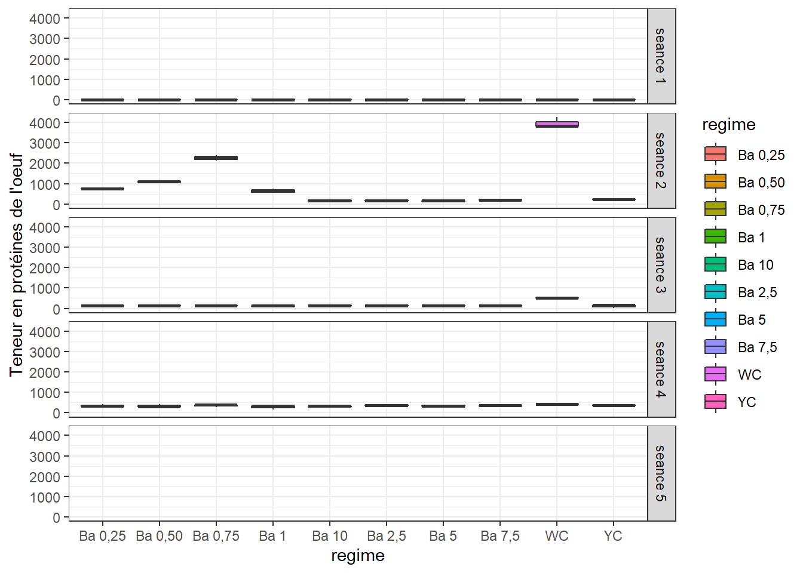
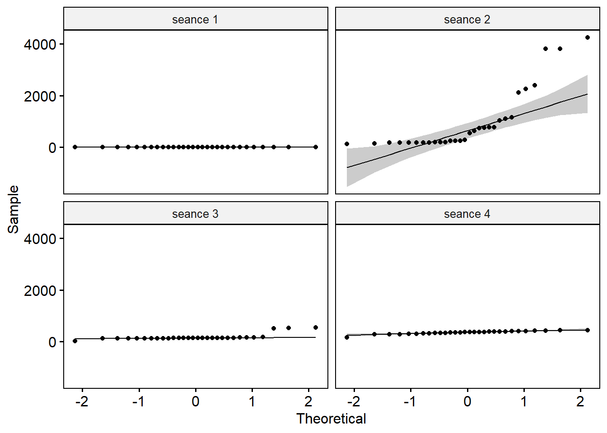
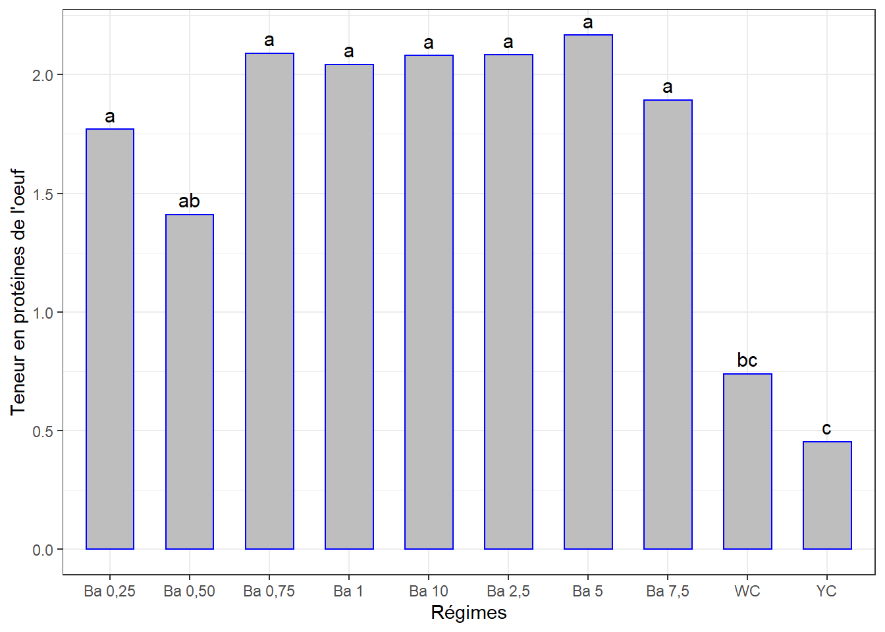
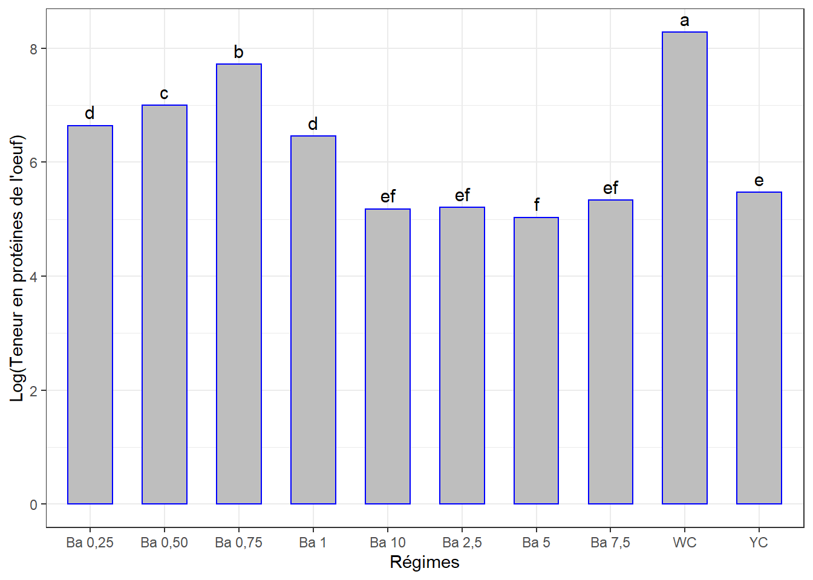
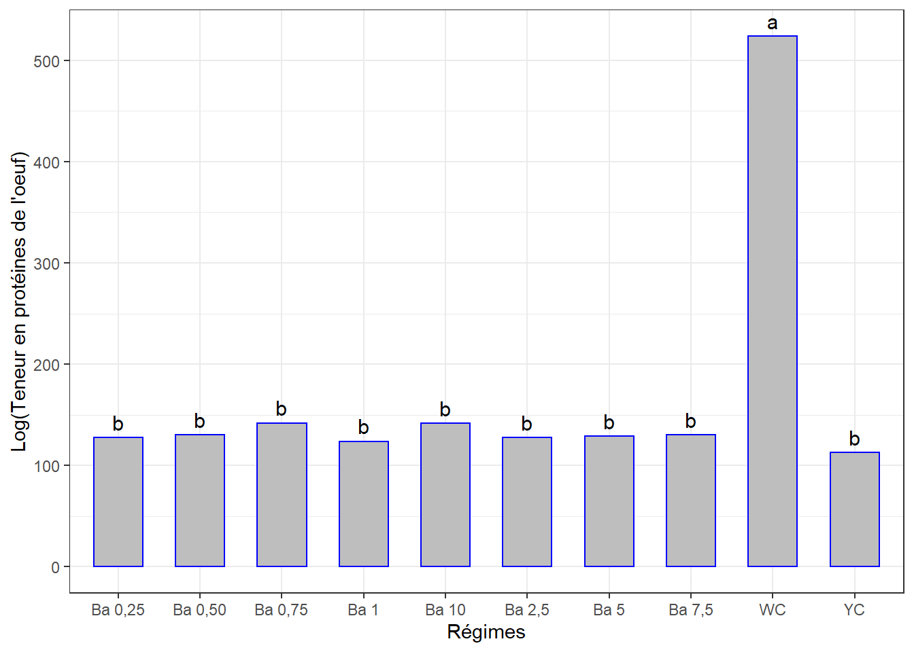
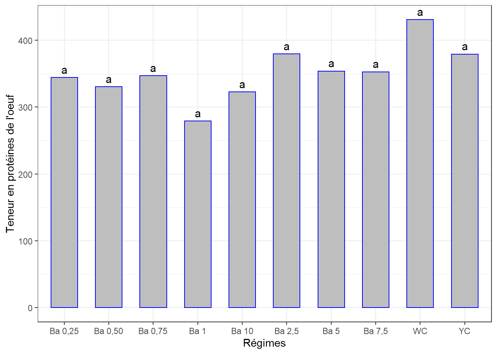
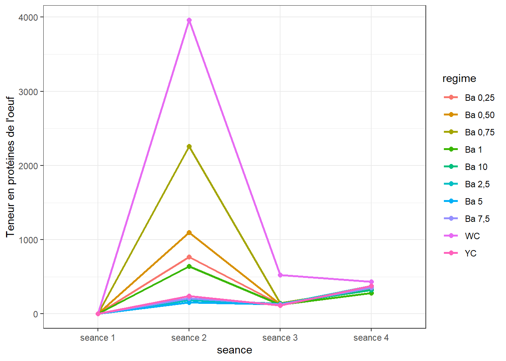
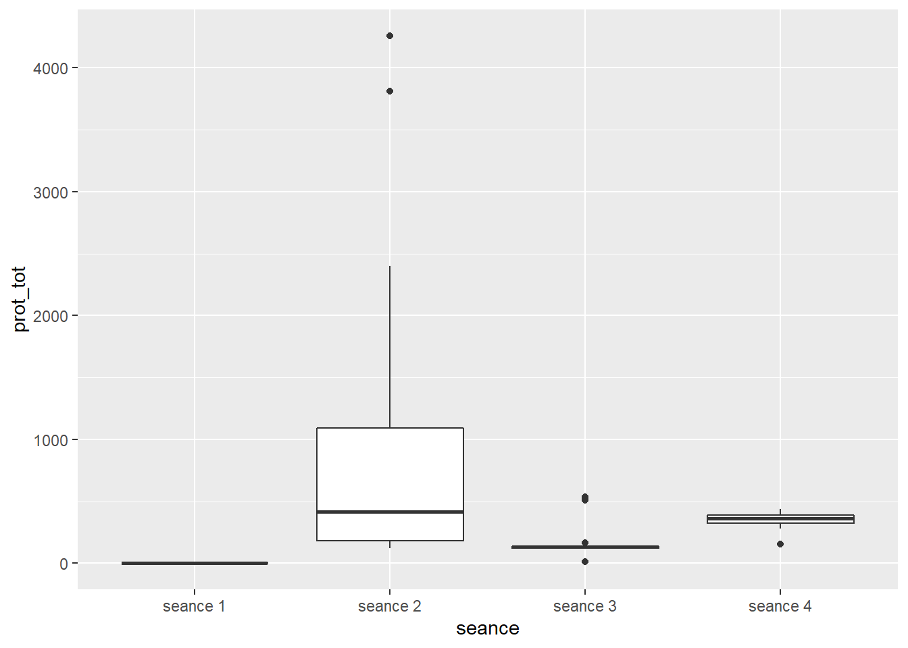

Chapitre 15 Teneur en protéines de l’oeuf
La démarche sera la même que celle des chapitres précédents. Il se peut qu’il y ait moins de commentaires.
Même jeu de données oeuf.csv qui contient différentes mesures dont la teneur en protéines des oeufs mesurée en 4 séances. Mêmes traitements (régimes).
La question est de savoir si les différents régimes induisent des en protéines des oeufs significativement différentes avec le temps.
Mais comme pour les autres variables, chaque traitement n’ayant pas été appliqué sur tous les groupes d’oiseaux, l’ANOVA à mesures répétées ne pourrait pas être appliquée. Nous comparerons les effets des traitements séance par séance, puis à l’aide d’une figure on appréciera s’il y a une évolution de cet indice en fonction du temps.
15.1 Les données
pro <- read_csv("data/oeuf.csv")
pro <- pro %>%
select(seance, regime, no_oeuf, prot_tot) %>%
mutate(id = rep(1:30, 5), .before = 1) %>%
convert_as_factor(id, seance, regime)Le tableau a été préalablement structuré en format long en Excel. J’ai ajouté un identifiant (id) pour les échantillons des séances.
## Rows: 150
## Columns: 5
## $ id <fct> 1, 2, 3, 4, 5, 6, 7, 8, 9, 10, 11, 12, 13, 14, 15, 16, 17, 18~
## $ seance <fct> seance 1, seance 1, seance 1, seance 1, seance 1, seance 1, s~
## $ regime <fct> "Ba 0,25", "Ba 0,25", "Ba 0,25", "Ba 0,50", "Ba 0,50", "Ba 0,~
## $ no_oeuf <dbl> 1, 2, 3, 1, 2, 3, 1, 2, 3, 1, 2, 3, 1, 2, 3, 1, 2, 3, 1, 2, 3~
## $ prot_tot <dbl> 2.48, 1.22, 1.61, 1.45, 1.01, 1.77, 1.61, 2.73, 1.93, 1.72, 2~15.2 Visualisation boxplots
bxp <- ggplot(pro, aes(x = regime, y = prot_tot, fill = regime)) +
geom_boxplot() +
facet_grid(seance ~ .) +
theme(axis.text.x = element_text(angle = 90, color = "bprok", vjust = 0.5, hjust = 1)) +
ylab("Teneur en protéines de l'oeuf") +
theme_bw()
bxp## Warning: Removed 30 rows containing non-finite values (stat_boxplot).
=> Variations notables entre les traitements pour certaines séances. Cette variable n’a pas été mésurée pour la séance 5.
15.3 Détection des valeurs aberrantes extrêmes
## [1] seance regime id no_oeuf prot_tot is.outlier is.extreme
## <0 rows> (or 0-length row.names)=> Pas de valeurs aberrantes extrêmes pour toutes les séances.
15.4 Conditions de l’ANOVA
15.4.1 Normalité
Si les données sont normalement distribuées, la p-value de Shapiro-Wilk doit être supérieure à 0,05 pour chaque régime.
## # A tibble: 4 x 4
## seance variable statistic p
## <fct> <chr> <dbl> <dbl>
## 1 seance 1 prot_tot 0.935 0.0679
## 2 seance 2 prot_tot 0.707 0.00000201
## 3 seance 3 prot_tot 0.505 0.00000000600
## 4 seance 4 prot_tot 0.916 0.0217=> Cette hypothèse n’est pas respectée pour toutes les séances. Mais on verra bien le comportement des résidus de l’ANOVA.
Créer des QQ-plots pour chaque point par séance

On explorera les données séance par séance pour palier au problème de normalité.
15.4.2 Homogénéité des variances
## # A tibble: 4 x 5
## seance df1 df2 statistic p
## <fct> <int> <int> <dbl> <dbl>
## 1 seance 1 9 20 0.536 0.832
## 2 seance 2 9 20 0.743 0.667
## 3 seance 3 9 20 0.900 0.543
## 4 seance 4 9 20 0.502 0.856=> Toutes les valeurs p sont > 0.05 => toutes les variances sont homogènes.
15.5 ANOVA à 1 facteur séance par séance
15.5.1 Séance 1
## [1] id seance regime no_oeuf prot_tot is.outlier is.extreme
## <0 rows> (or 0-length row.names)=> Pas d’observations supposées extrêmes.
15.5.1.1 Le modèle
## Anova Table (Type II tests)
##
## Response: prot_tot
## Sum Sq Df F value Pr(>F)
## regime 10.1219 9 6.2482 0.0003268 ***
## Residuals 3.5999 20
## ---
## Signif. codes: 0 '***' 0.001 '**' 0.01 '*' 0.05 '.' 0.1 ' ' 1La p-value < 0.01 => différence très significative entre les effets d’au moins 2 régimes sur cet indice à la séance 1.
## # A tibble: 1 x 3
## variable statistic p.value
## <chr> <dbl> <dbl>
## 1 residuals(lm1) 0.986 0.955=> Normalité Okay.
15.5.1.2 Comparaisons par paires
cm1 <- (SNK.test(lm1, "regime", group = TRUE))$groups %>%
mutate(regime = rownames(.)) %>%
select(regime, prot_tot, groups) %>%
as_tibble()
cm1## # A tibble: 10 x 3
## regime prot_tot groups
## <chr> <dbl> <chr>
## 1 Ba 5 2.17 a
## 2 Ba 0,75 2.09 a
## 3 Ba 2,5 2.08 a
## 4 Ba 10 2.08 a
## 5 Ba 1 2.04 a
## 6 Ba 7,5 1.89 a
## 7 Ba 0,25 1.77 a
## 8 Ba 0,50 1.41 ab
## 9 WC 0.74 bc
## 10 YC 0.453 cggplot(data = cm1, mapping = aes(x = regime, y = prot_tot)) +
geom_bar(stat = "identity", color = "blue", fill = "grey", width = 0.6) +
#ylim(0, 100) +
geom_text(aes(label = groups), vjust = -0.5, size = 4) +
xlab("Régimes") + ylab("Teneur en protéines de l'oeuf") +
theme(axis.text.x = element_text(angle = 45, color = "black", vjust = 1, hjust = 1)) +
theme_bw()
15.5.2 Séance 2
15.5.2.1 Le modèle
## # A tibble: 3 x 7
## id seance regime no_oeuf prot_tot is.outlier is.extreme
## <fct> <fct> <fct> <dbl> <dbl> <lgl> <lgl>
## 1 28 seance 2 WC 1 4257. TRUE TRUE
## 2 29 seance 2 WC 2 3812. TRUE TRUE
## 3 30 seance 2 WC 3 3812. TRUE TRUE=> Le mais blanc, mais on ne peut pas l’exclure !
## Anova Table (Type II tests)
##
## Response: prot_tot
## Sum Sq Df F value Pr(>F)
## regime 41352094 9 438.71 < 2.2e-16 ***
## Residuals 209461 20
## ---
## Signif. codes: 0 '***' 0.001 '**' 0.01 '*' 0.05 '.' 0.1 ' ' 1La p-value est < 0.01 => différence très significative entre les effetes d’au moins 2 régimes.
## # A tibble: 1 x 3
## variable statistic p.value
## <chr> <dbl> <dbl>
## 1 residuals(lm2) 0.874 0.00207=> Normalité pas respectée.
## Anova Table (Type II tests)
##
## Response: log(prot_tot)
## Sum Sq Df F value Pr(>F)
## regime 36.626 9 199.82 < 2.2e-16 ***
## Residuals 0.407 20
## ---
## Signif. codes: 0 '***' 0.001 '**' 0.01 '*' 0.05 '.' 0.1 ' ' 1## # A tibble: 1 x 3
## variable statistic p.value
## <chr> <dbl> <dbl>
## 1 residuals(lm2_log) 0.980 0.823=> le modèle log() a amélioré la distribution.
15.5.2.2 Comparaisons par paires
cm2 <- (SNK.test(lm2_log, "regime", group = TRUE))$groups %>%
mutate(regime = rownames(.))
colnames(cm2)[1] <- "prot_tot"
cm2## prot_tot groups regime
## WC 8.282732 a WC
## Ba 0,75 7.721421 b Ba 0,75
## Ba 0,50 6.998419 c Ba 0,50
## Ba 0,25 6.642414 d Ba 0,25
## Ba 1 6.457860 d Ba 1
## YC 5.469979 e YC
## Ba 7,5 5.335104 ef Ba 7,5
## Ba 2,5 5.206139 ef Ba 2,5
## Ba 10 5.182272 ef Ba 10
## Ba 5 5.032674 f Ba 5Visualisation des groupes
ggplot(data = cm2, mapping = aes(x = regime, y = prot_tot)) +
geom_bar(stat = "identity", color = "blue", fill = "grey", width = 0.6) +
#ylim(0, 10) +
geom_text(aes(label = groups), vjust = -0.5, size = 4) +
xlab("Régimes") + ylab("Log(Teneur en protéines de l'oeuf)") +
theme(axis.text.x = element_text(angle = 45, color = "bprok", vjust = 1, hjust = 1)) +
theme_bw()
15.5.3 Séance 3
## # A tibble: 5 x 7
## id seance regime no_oeuf prot_tot is.outlier is.extreme
## <fct> <fct> <fct> <dbl> <dbl> <lgl> <lgl>
## 1 25 seance 3 YC 1 14.8 TRUE TRUE
## 2 26 seance 3 YC 2 166. TRUE FALSE
## 3 28 seance 3 WC 1 507. TRUE TRUE
## 4 29 seance 3 WC 2 539. TRUE TRUE
## 5 30 seance 3 WC 3 526. TRUE TRUE=> Mais blanc aussi indexé. Pas exclu.
15.5.3.1 Le modèle
## Anova Table (Type II tests)
##
## Response: prot_tot
## Sum Sq Df F value Pr(>F)
## regime 421938 9 58.446 2.113e-12 ***
## Residuals 16043 20
## ---
## Signif. codes: 0 '***' 0.001 '**' 0.01 '*' 0.05 '.' 0.1 ' ' 1La p-value < 0.01 => Différence très significative entre les effetes d’au moins 2 régimes.
## # A tibble: 1 x 3
## variable statistic p.value
## <chr> <dbl> <dbl>
## 1 residuals(lm3) 0.707 0.00000195=> Normalité pas respectée.
## Anova Table (Type II tests)
##
## Response: log(prot_tot)
## Sum Sq Df F value Pr(>F)
## regime 36.626 9 199.82 < 2.2e-16 ***
## Residuals 0.407 20
## ---
## Signif. codes: 0 '***' 0.001 '**' 0.01 '*' 0.05 '.' 0.1 ' ' 1## # A tibble: 1 x 3
## variable statistic p.value
## <chr> <dbl> <dbl>
## 1 residuals(lm3_log) 0.980 0.823=> le modèle log() a amélioré la distribution.
15.5.3.2 Comparaisons par paires
cm3 <- (SNK.test(lm3, "regime", group = TRUE))$groups %>%
mutate(regime = rownames(.))
colnames(cm3)[1] <- "prot_tot"
cm3## prot_tot groups regime
## WC 523.7800 a WC
## Ba 0,75 141.9967 b Ba 0,75
## Ba 10 141.6567 b Ba 10
## Ba 0,50 130.3000 b Ba 0,50
## Ba 7,5 130.0100 b Ba 7,5
## Ba 5 128.9400 b Ba 5
## Ba 2,5 127.4767 b Ba 2,5
## Ba 0,25 127.4233 b Ba 0,25
## Ba 1 123.6733 b Ba 1
## YC 112.6900 b YC… Et la visualisation graphique :
ggplot(data = cm3, mapping = aes(x = regime, y = prot_tot)) +
geom_bar(stat = "identity", color = "blue", fill = "grey", width = 0.6) +
geom_text(aes(label = groups), vjust = -0.5, size = 4) +
#ylim(0, 40) +
xlab("Régimes") + ylab("Log(Teneur en protéines de l'oeuf)") +
theme(axis.text.x = element_text(angle = 45, color = "bprok", vjust = 1, hjust = 1)) +
theme_bw()
15.5.4 Séance 4
## # A tibble: 1 x 7
## id seance regime no_oeuf prot_tot is.outlier is.extreme
## <fct> <fct> <fct> <dbl> <dbl> <lgl> <lgl>
## 1 12 seance 4 Ba 1 3 153. TRUE FALSE15.5.4.1 Le modèle
## Anova Table (Type II tests)
##
## Response: prot_tot
## Sum Sq Df F value Pr(>F)
## regime 43316 9 1.6763 0.1608
## Residuals 57422 20La p-value > 0.05 => pas de différence significative entre les effets des régimes.
## # A tibble: 1 x 3
## variable statistic p.value
## <chr> <dbl> <dbl>
## 1 residuals(lm4) 0.969 0.522=> Normalité Okay.
15.5.4.2 Comparaisons par paires
cm4 <- (SNK.test(lm4, "regime", group = TRUE))$groups %>%
mutate(regime = rownames(.)) %>%
select(regime, prot_tot, groups) %>%
as_tibble()
cm4## # A tibble: 10 x 3
## regime prot_tot groups
## <chr> <dbl> <chr>
## 1 WC 431. a
## 2 Ba 2,5 379. a
## 3 YC 379. a
## 4 Ba 5 354. a
## 5 Ba 7,5 353. a
## 6 Ba 0,75 347. a
## 7 Ba 0,25 344. a
## 8 Ba 0,50 330. a
## 9 Ba 10 323. a
## 10 Ba 1 279. aVisualisation des groupes
ggplot(data = cm4, mapping = aes(x = regime, y = prot_tot)) +
geom_bar(stat = "identity", color = "blue", fill = "grey", width = 0.6) +
#ylim(0, 40) +
geom_text(aes(label = groups), vjust = -0.5, size = 4) +
xlab("Régimes") + ylab("Teneur en protéines de l'oeuf") +
theme(axis.text.x = element_text(angle = 45, color = "bprok", vjust = 1, hjust = 1)) +
theme_bw()
15.6 Évolution de la teneur en protéines de l’oeuf par régime au cours du temps
15.6.1 Sommaire
pro_ic <- summarySE(pro,
measurevar = "prot_tot",
groupvars = c("seance", "regime"),
na.rm = TRUE)
pro_ic## seance regime N prot_tot sd se ci
## 1 seance 1 Ba 0,25 3 1.7700000 0.6450581 0.37242449 1.6024132
## 2 seance 1 Ba 0,50 3 1.4100000 0.3815757 0.22030282 0.9478865
## 3 seance 1 Ba 0,75 3 2.0900000 0.5768882 0.33306656 1.4330697
## 4 seance 1 Ba 1 3 2.0433333 0.3027100 0.17476969 0.7519733
## 5 seance 1 Ba 10 3 2.0800000 0.4156922 0.24000000 1.0326367
## 6 seance 1 Ba 2,5 3 2.0833333 0.1327906 0.07666667 0.3298700
## 7 seance 1 Ba 5 3 2.1666667 0.2829016 0.16333333 0.7027666
## 8 seance 1 Ba 7,5 3 1.8933333 0.7169612 0.41393773 1.7810303
## 9 seance 1 WC 3 0.7400000 0.1228821 0.07094599 0.3052560
## 10 seance 1 YC 3 0.4533333 0.1193035 0.06887993 0.2963664
## 11 seance 2 Ba 0,25 3 766.9656333 7.0772675 4.08606229 17.5809071
## 12 seance 2 Ba 0,50 3 1096.0388667 60.7934893 35.09913743 151.0193995
## 13 seance 2 Ba 0,75 3 2259.0433667 139.6978560 80.65459477 347.0287124
## 14 seance 2 Ba 1 3 642.4514333 96.0139591 55.43368511 238.5118966
## 15 seance 2 Ba 10 3 182.3825667 49.7000484 28.69433632 123.4617645
## 16 seance 2 Ba 2,5 3 182.8859000 16.7745349 9.68478225 41.6702548
## 17 seance 2 Ba 5 3 154.9496667 26.3594096 15.21861225 65.4804035
## 18 seance 2 Ba 7,5 3 209.5637333 36.7977713 21.24520315 91.4107313
## 19 seance 2 WC 3 3960.3886000 256.4419000 148.05680000 637.0369947
## 20 seance 2 YC 3 239.8490000 41.0813615 23.71833513 102.0517594
## 21 seance 3 Ba 0,25 3 127.4233333 10.1916453 5.88414914 25.3174504
## 22 seance 3 Ba 0,50 3 130.3000000 8.4051115 4.85269341 20.8794545
## 23 seance 3 Ba 0,75 3 141.9966667 8.8498041 5.10943680 21.9841322
## 24 seance 3 Ba 1 3 123.6733333 8.4162957 4.85915059 20.9072375
## 25 seance 3 Ba 10 3 141.6566667 11.0107871 6.35708092 27.3523116
## 26 seance 3 Ba 2,5 3 127.4766667 6.8145457 3.93437980 16.9282700
## 27 seance 3 Ba 5 3 128.9400000 7.2323509 4.17559976 17.9661557
## 28 seance 3 Ba 7,5 3 130.0100000 5.4999182 3.17537924 13.6625542
## 29 seance 3 WC 3 523.7800000 15.7514666 9.09411348 39.1288122
## 30 seance 3 YC 3 112.6900000 84.8492239 48.98772227 210.7771570
## 31 seance 4 Ba 0,25 3 344.2066667 59.8244719 34.53967493 148.6122266
## 32 seance 4 Ba 0,50 3 330.4366667 68.5553917 39.58047386 170.3010339
## 33 seance 4 Ba 0,75 3 346.9866667 55.5250865 32.05742365 137.9319614
## 34 seance 4 Ba 1 3 279.1466667 110.0395503 63.53136400 273.3533967
## 35 seance 4 Ba 10 3 322.7000000 38.5846044 22.27683176 95.8494710
## 36 seance 4 Ba 2,5 3 379.4866667 23.6732176 13.66773858 58.8075327
## 37 seance 4 Ba 5 3 353.8166667 35.4596057 20.47261287 88.0865437
## 38 seance 4 Ba 7,5 3 352.8033333 36.4496534 21.04421721 90.5459586
## 39 seance 4 WC 3 430.8366667 8.2637905 4.77110167 20.5283936
## 40 seance 4 YC 3 379.3300000 23.1687095 13.37646067 57.554265015.6.2 Visualisation
ggplot(pro_ic, aes(x = seance, y = prot_tot, colour = regime, group = regime)) +
geom_line(size = 1) +
geom_point(size = 2) +
ylab("Teneur en protéines de l'oeuf") +
theme_bw()
Données à revoir.
Nous savons par les analyses pour chaque séance plus haut, que
- séance 1 : il existe des différences d’effet entre les régimes
- séance 2 : il existe des différences d’effet entre les régimes
- séance 3 : il existe des différences d’effet entre les régimes
- séance 4 : Pas de différences d’effet entre les régimes
Puisque les données ne répondent pas aux conditions pour évaluer les effets des régimes au cours du temps, on négligera l’effet des régimes pour évaluer globalement l’effet du temps sur cet indice.
On pourrait se demander si les teneurs en protéines mesurés sur l’ensemble des sujets sont significativement différentes d’une séance à l’autre (c’est-à-dire avec le temps).
15.6.3 Effet du temps
15.6.3.1 boxplots, facteur temps

15.6.3.2 Valeurs aberrantes, facteur temps
pro <- pro %>% mutate(id2 = 1:nrow(.), .before = 1)
pro_out <- pro %>%
group_by(seance) %>%
identify_outliers(prot_tot)
pro_out## # A tibble: 9 x 8
## seance id2 id regime no_oeuf prot_tot is.outlier is.extreme
## <fct> <int> <fct> <fct> <dbl> <dbl> <lgl> <lgl>
## 1 seance 2 58 28 WC 1 4257. TRUE TRUE
## 2 seance 2 59 29 WC 2 3812. TRUE TRUE
## 3 seance 2 60 30 WC 3 3812. TRUE TRUE
## 4 seance 3 85 25 YC 1 14.8 TRUE TRUE
## 5 seance 3 86 26 YC 2 166. TRUE FALSE
## 6 seance 3 88 28 WC 1 507. TRUE TRUE
## 7 seance 3 89 29 WC 2 539. TRUE TRUE
## 8 seance 3 90 30 WC 3 526. TRUE TRUE
## 9 seance 4 102 12 Ba 1 3 153. TRUE FALSE=> Mais blanc. Non exclues.
15.6.3.3 Homogénéité des variances et ANOVA, facteur temps
Les autres conditions ont déjà été vérifiées.
## ANOVA Table (type III tests)
##
## Effect DFn DFd F p p<.05 ges
## 1 seance 1.01 29.25 15.865 0.000401 * 0.276=> C’est la p-value qui nous intéresse et elle est < 0.01 => Différence très significative entre certaines séances.
15.6.3.4 Comparaisons par paires, facteur temps
``{r} tph <- pro %>% pairwise_t_test(prot_tot ~ seance, paired = TRUE, p.adjust.method = “bonferroni”)
tph %>% select(group1, group2, p, p.adj, p.adj.signif)
#### Boxplots avec p-values
``{r pro-temps-pwc, message = FALSE, warning = FALSE}
tph <- tph %>% add_xy_position(x = "seance")
ggboxplot(pro, x = "seance", y = "prot_tot") +
#ylim(0, 100) +
stat_pvalue_manual(tph) +
labs(subtitle = get_test_label(lm, detailed = TRUE),
caption = get_pwc_label(tph))